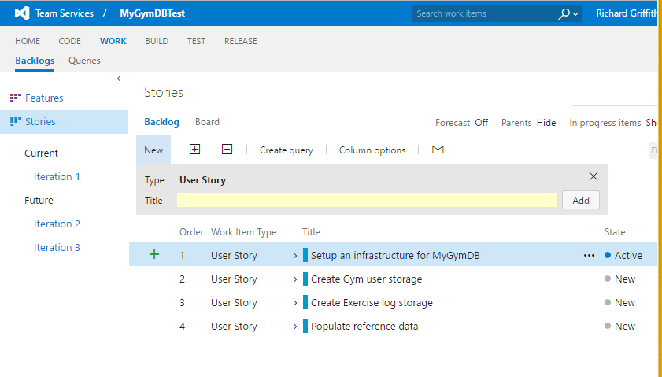
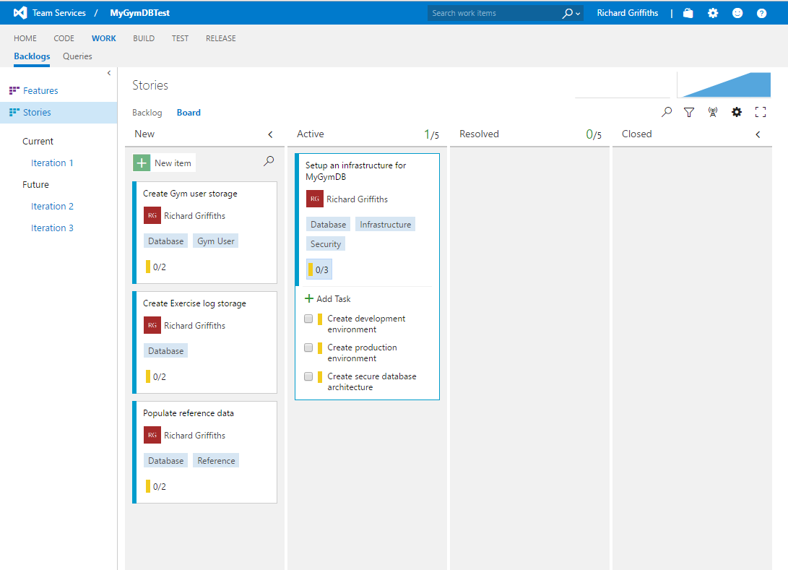
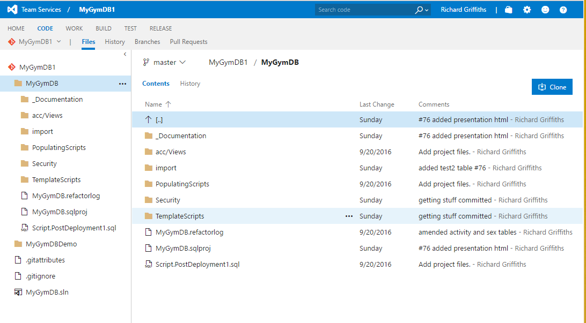
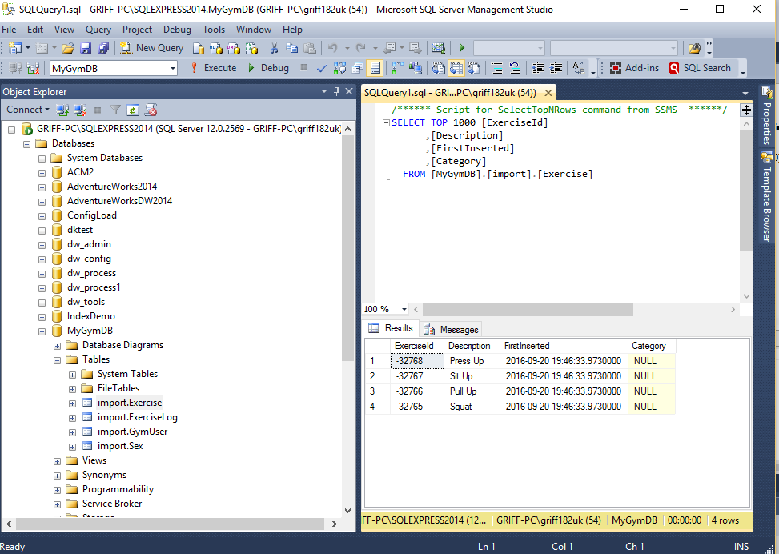
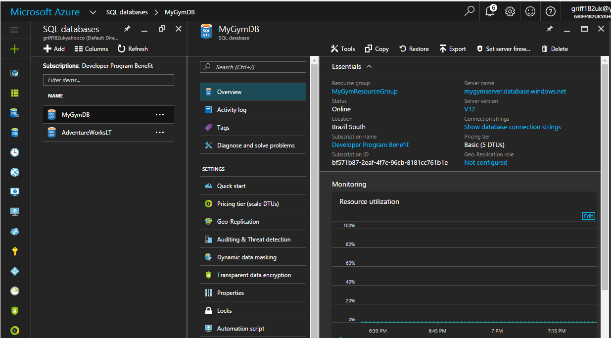
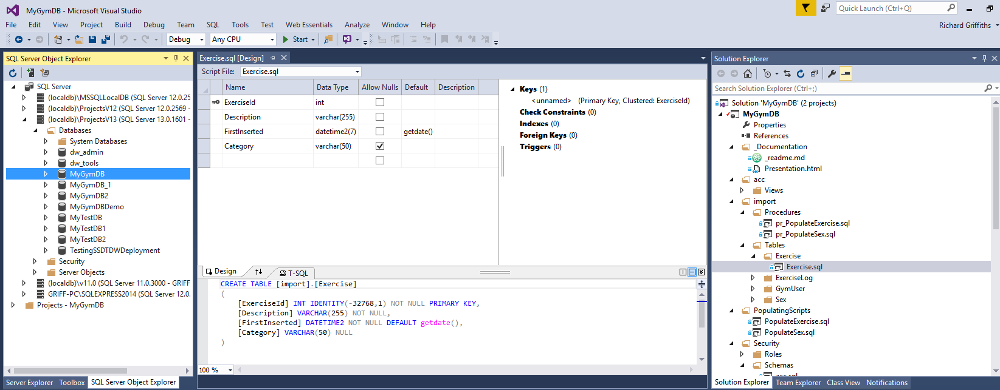

class: center, middle # **DIY DB From Home: ** Build a Database for free with Team Services Online, SSDT and Azure --- # Overview 1. Have an idea (or steal one)! 2. Design a database 3. PreRequisites 4. Work Management 5. Source Control 6. Create an infrastructure 7. Database tools 8. Build your database 8. Deploy your database 9. Demo 10. Bask in the glory of what we have achieved! 11. Get stuck in! 12. Resources ??? Notes on this slide --- # Have an idea! * Don't stress too much over this - anything can be stored in a database * Think of something that interests you that you know well * "Ooh me like exercise! I'll do a an exercise thingy" * So today we're going to make a (very small) gym database ??? Notes on this slide --- # Design a database * Get yourself a paper and pen... * You'll learn over time, lets just have some fun! ??? Notes on this slide --- # PreRequisite (Free!) Resources This is what [today]("hello") is all about, showing you that you can use free tools from home to make a complete database service from home. * [Git](https://git-scm.com/) & [Github Account](https://github.com/) * [Team Services Online Account](https://www.visualstudio.com/team-services/) * [Visual Studio Community Edition](https://www.visualstudio.com/vs/community/) * [SQL Server Express](https://www.microsoft.com/en-gb/download/details.aspx?id=52679) * [Azure Account] (https://azure.microsoft.com/en-gb/) * [Notepad++](https://notepad-plus-plus.org/download/v6.9.2.html), [Atom] (https://atom.io/) ??? Notes on this slide --- # Work Management * Using team services online (up to 5 users) for free * Create work projects and source control for your code * User stories, backlog, kanban board, source control.. * Does a heck of a lot more... ??? Notes on this slide --- # Team Services Product Backlog View  --- # Team Services Kanban Board  --- # Source Control * Keeps all your code in a definitive location (the source) * Keeps a history of your code and changes you've made * It's important in the enterprise, it's important for us! * No excuses anymore, git and github are free ??? Notes on this slide --- # Team Services Code  --- # Create an infrastructure * Use our local machine for dev with SQL Express * (Can also use localdb in SSDT for initial dev - see later) * Use Azure database for production * Using Azure Platform as a Service (PaaS) is very easy! ??? Notes on this slide --- # SQL Express  --- # Azure Dashboard <img src="Images/AzureDashboard.PNG" style="width: 100%; height: 100%"/> --- # Azure SQL Database  --- # Database Tools * SSDT (SQL Server Data Tools) * Database project in visual studio community edition * A lot of functionality e.g. schema compare, data compare * Allows you to check in your code to source control * Link you code with user stores * State based so changes being made are easy ??? Notes on this slide --- # SQL Server Data Tools  --- # Build your database ??? Notes on this slide --- # Deploy your database * SSDT Demo: * Deploying a database ??? Notes on this slide --- # Demo * Set up Visual Studio Team Services Project * Add user story as work * Link project to visual studio * Develop objects * Build and Publish * Check in your code and link with user story ??? Notes on this slide --- Bask in the glory of what we have achieved! ??? Notes on this slide --- # Immerse yourself * Mess around with free tools * Come to the user group sessions (meetup.com, SQL, .Net, Agile and many more!) * Look at training material * Force your bosses to get you books * Have fun! --- #Further Resources * github repo * Microsoft Documentation * Microsoft Virual Academy * Youtube! * Pluralsight (free trial period when do visual studio onlin) ---